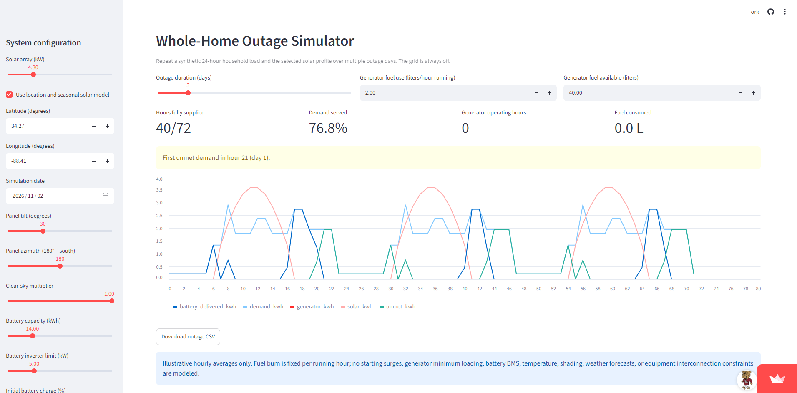
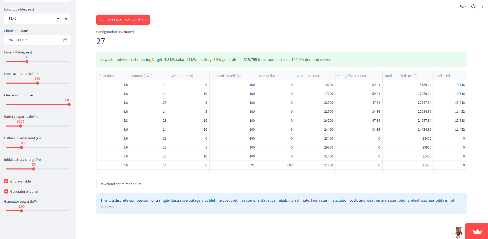
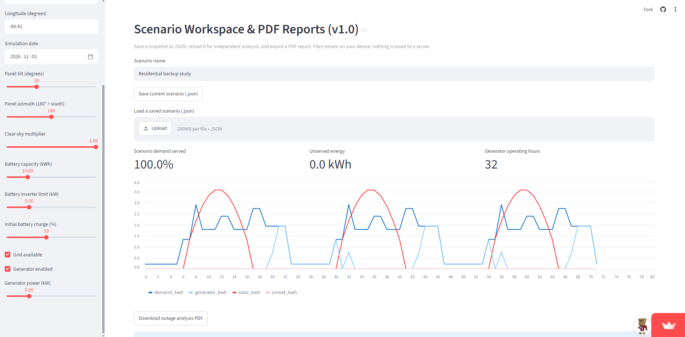

☀ Solar generation
Hourly production estimates with seasonal solar geometry and configurable array parameters.
An open-source engineering application for exploring residential solar generation, LiFePO4 battery storage, backup generators, and multi-day power-outage resilience.
Version 1.0.0 · Python simulation engine · Interactive Streamlit dashboard
Hourly production estimates with seasonal solar geometry and configurable array parameters.
LiFePO4 bank sizing, state-of-charge tracking, efficiency losses, and inverter constraints.
Generator sizing, fuel use, runtime estimates, and finite fuel inventory analysis.
Editable appliance schedules and HVAC running-load and starting-load screening.
Multi-day dispatch studies tracking served energy, unmet demand, and energy contributions.
Compare discrete solar, battery, and generator configurations using modeled costs and energy-demand coverage.
Define solar, battery, generator, household loads, and outage assumptions.
Run hourly dispatch, outage, fuel, and capacity-comparison calculations.
Review charts and metrics, export CSV, save JSON scenarios, or download PDF summaries.
Explore a 4.8 kW solar array, 14 kWh battery, and 5 kW generator during a 72-hour outage. Adjust household loads and sunlight assumptions, evaluate fuel budgets, and compare candidate equipment configurations. This is an illustrative scenario, not a recommended equipment design.
The core model evaluates energy dispatch in hourly steps. At each step, photovoltaic generation serves demand first. Available battery energy supplies remaining demand subject to inverter limits, minimum state of charge, and discharge efficiency. When enabled, the generator supplies additional demand up to its rated power; any remaining demand is recorded as unmet energy during a grid outage.
Each hour records solar used, battery-delivered energy, generator energy, unmet demand, and curtailed solar. This makes the source of supplied energy inspectable rather than relying on a single black-box score.
Stored energy is tracked across hours with charge and discharge efficiency losses, a minimum state-of-charge floor, and an inverter output constraint.
The optimization module enumerates discrete capacity combinations, simulates the specified outage, and ranks candidates meeting a chosen energy-coverage threshold by modeled equipment and outage fuel costs.
Tradeoff: Hourly resolution makes scenario exploration fast and understandable, but it cannot capture subsecond startup currents or equipment transients. A candidate's energy coverage is specific to the modeled outage, not a probabilistic reliability estimate.
Three views captured from the live Streamlit application. These illustrate different model settings and should not be interpreted as results from one continuous simulation.



This educational scenario-analysis tool is not validated electrical design or installation software. Hourly models do not resolve all motor-start transients, equipment protections, or wiring safety requirements. Modeled energy-demand coverage for one outage is not a probability of reliability. The scenario-workspace PDF uses the unlimited-fuel outage model; finite-fuel analysis is available separately in the application.